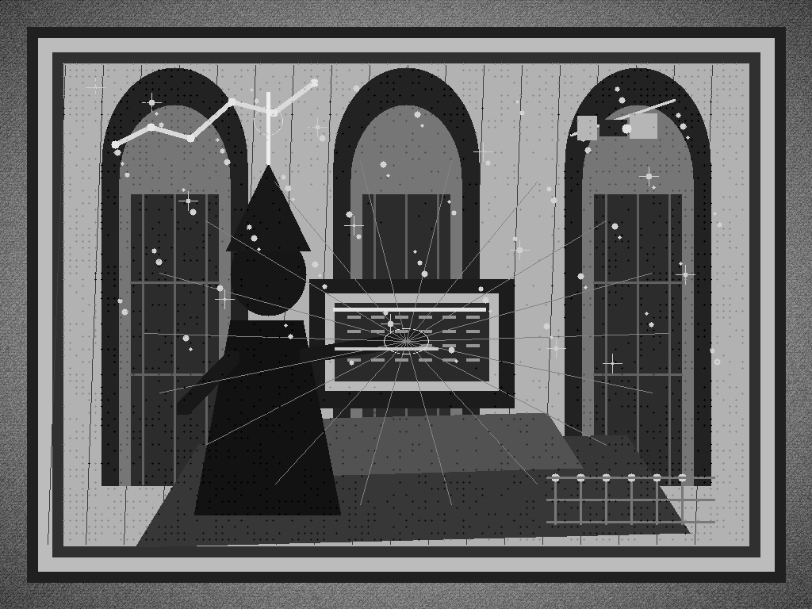

Morning Edition
6:00 AM CDTFinance & Markets
Dealmakers Find the IPO Portal Still Open
The U.S. IPO market is sitting at $141.2 billion in 2026 proceeds, barely under 2021's record, and Axios says Brookfield-backed data-center operator Csquare could push the year over the line today. SpaceX, SK Hynix, and AI-linked listings have turned the public market into the morning's biggest liquidity spell, though the whole structure still depends on investors believing AI demand can keep eating capex.
— Source: Axios on U.S. IPO proceeds, July 13, 2026Goldman Turns Listings Into Fee Revenue
Financial News reports Goldman's equity-underwriting fees jumped 90% as big-ticket listings returned, with SpaceX helping pull investment-banking revenue higher. The bank story is the cleaner version of the broader market story: public exits are back for trophy assets, and the best-positioned desks are converting volatility, AI infrastructure, and founder liquidity into real P&L.
— Source: Financial News on Goldman's underwriting fees, July 14, 2026Private Equity Gets More Selective, Not Easier
PwC's midyear private-equity outlook says U.S. PE deal volume fell 34% in the first half while average deal size rose nearly fourfold, a pattern that reads like capital concentrating into fewer, higher-conviction moves. The practical sponsor note: exits remain tight, continuation vehicles and secondaries still matter, and the reopened IPO window is mostly helping assets clean enough for public-market scrutiny.
— Source: PwC private equity deals outlook, July 2026World & US
Iran Blockade Returns as the Global Red Banner
AP's top world line this morning is the U.S. reimposing a blockade on Iranian ports after Iranian attacks around the Strait of Hormuz. Tehran is threatening broader energy-export disruption, making this both a security crisis and a supply-chain alert: oil flows, shipping insurance, Gulf diplomacy, and market risk are all running through the same narrow strait.
— Source: AP on the Iran blockade and Hormuz crisis, July 15, 2026ICE Vehicle Stops Hit a National Breakpoint
AP reports the Trump administration ordered ICE to suspend most vehicle stops after two deadly shootings, with exceptions for criminal warrants or joint operations. The operational lesson is stark: when enforcement scales faster than training, cameras, warrants, and clear protocols, the hidden assumptions in the system become front-page risk.
— Source: AP on ICE suspending most vehicle stops, July 15, 2026Record Overnight Heat Becomes the Quiet Outage
A stubborn heat dome is expected to break or tie more than 90 U.S. temperature records through Wednesday, with many of them overnight lows. The health risk is that people and buildings never get a cooldown window. The systems risk is that grids, cooling centers, hospitals, and field workers are now debugging heat stress around the clock.
— Source: AP on the U.S. heat dome, July 14, 2026
The Wednesday Scrying Lens: a gothic code-mage watches IPO runes, orbit paths, heat maps, and shipping lanes flicker through the terminal glass.
"A good Wednesday build begins by naming the unstable dependency, then turns patience into velocity."— The Developer's Almanac
Sagittarius Horoscope
Justin, today's Sagittarius signal says the clever move is not rushing. People points toward breaking old patterns and reconsidering relationship dynamics; Times of India adds patience, fewer distractions, and care around fast-moving tasks. The Rat overlay agrees: slow the reaction to surprising information, communicate plainly, and let teamwork do some of the lifting. Developer translation: do not merge from adrenaline. Write down the assumption, make the smallest useful patch, and let one calm review turn the day from fog into forward motion. Lucky hex: #0f766e. Lucky command: git status && git diff --check.
Tech, AI, Space & Crypto
-
AI's Power Bill Becomes the Policy Layer
AP reports renewable-energy advocates are pushing back as gas plants rise to feed AI data-center demand. The infrastructure debate is no longer abstract: model growth now touches interconnection queues, local emissions, ratepayer politics, and whether compute gets built with clean power or just faster power.
— Source: AP on AI data centers and energy, July 15, 2026 -
Starship Gets a Real Payload Rehearsal
SpaceX is preparing Starship Flight 13 for as early as Thursday, July 16, with 20 Starlink V3 satellites aboard. The mission is still a test, but the shape of the work is changing: more than flight spectacle, this is a rehearsal for deployment, laser networking, and the giant rocket becoming a logistics system.
— Sources: SpaceX Starship Flight 13 page, MySA on Starship Flight 13, July 15, 2026 -
Stablecoin Rules Race the Deadline
Barron's reports the Federal Reserve is racing to release payment-stablecoin rules for public comment under the GENIUS Act deadline. Meanwhile, banks and crypto firms are still fighting over yield, rewards, reserves, and who gets to look bank-like without living under bank constraints.
— Sources: Barron's on Fed stablecoin rules, CoinDesk on stablecoin yield debate, July 2026 -
Tokenmaxxing Enters the CFO Dashboard
Business Insider flags a new earnings-season worry: companies that pushed internal AI adoption may discover token bills growing faster than budget owners expected. The engineering moral is familiar: usage metrics without cost guardrails eventually become an incident report with nicer charts.
— Source: Business Insider on AI usage costs, July 15, 2026 -
Wednesday Build Note
Today's best engineering move is to slow the hot path just enough to instrument it. Add the assert, write the note, cap the spend, or turn one "probably fine" into something observable. The spell is disciplined attention.
— Source: The Daily Code desk, July 15, 2026
Active Reminders
- Test reminder from Nemu (Jan 29)
- Connect Nemu to Notion (Feb 1)
- Research VPN/proxy services for secure agent browsing (Feb 1)
- Create security OpenClaw bot (Feb 2)
- Plaid Integration Research (Feb 4)
- Build Oomi iOS and Android app to connect Nemu to data (Feb 15)